Use Barcode data sources to generate bar code images
You can use the Electronic reporting (ER) framework to design ER format components that you can run to generate electronic and printable outbound documents that you require. To generate an outbound document in Microsoft Office format, you must specify the layout of the report by using either a Microsoft Excel document or a Microsoft Word document as a report template. The ER Operations designer lets you attach an Excel or Word document as a template for an ER format. The following named elements in the attached template are associated with the elements of the configured format component:
- Content controls in Word
- Named sheets, ranges, cells, shapes, and images in Excel
These named elements are used as placeholders for data that is entered in a generated document when an ER format is run. ER format elements are bound to data sources. These data sources specify the data that will be entered in the generated documents at runtime. For more information, see Embed images and shapes in documents that you generate by using ER (This is an external linThis link was changed due to HTMLfromRepoGenerator).
ER now supports the Barcode data source type. Therefore, you can now generate an image that represents the bar code for specified text. When you configure an ER format, you can specify data sources of the Barcode type to generate bar code images. You can then add those images to generated business documents, such as orders, invoices, packing slips, and receipts. You can also add them to various kind of labels, such as product and shelf labels, and packaging and shipping labels.
The following placeholders can be used in report templates to enter bar code images:
By using a data source of the Barcode type, you can generate bar codes in the following formats:
One-dimensional bar codes:
- Codabar
- Code 39
- Code 93
- Code 128
- EAN-8
- EAN-13
- ITF-14
- Intelligent Mail
- MSI
- Plessey
- PDF417
- UPC-A
- UPC-E
Two-dimensional bar codes:
- Aztec
- Data Matrix
- QR Code
When you configure a Barcode data source, you can define specific rendering parameters that are used to generate an image:
- Width – Specify the bar code's width in pixels. A value of 0 (zero) indicates that the default width is used. The meaning can vary for different formats.
- Height – Specify the bar code's height in pixels. A value of 0 (zero) indicates that the default height is used. The meaning can vary for different formats.
- Margin – Specify the size of the bar code's margin in pixels. The margin is the area on each side of a bar code that must be kept clear (quiet zone). A value of 0 (zero) indicates that the default margin is used. The meaning can vary for different formats.
- Output content – Set the value to Yes to generate a bar code image that contains the encoded information as text. The default value is No.
- Encoding – Specify the type of characters that are encoded in the generated bar code image. By default, the UTF-8 encoding is used.
Important
When you add a new Barcode data source, you must place it under another item (container) as a nested element.
When you bind a Barcode data source to a cell element in a format, and the cell element represents either a Word content control or an Excel picture, the data source is presented in that binding as a function that has a single parameter of the String type. You must use this parameter to specify the text that should be transformed into a bar code image and read when a generated bar code is scanned.
For more information about this feature, complete the examples in this topic.
Example: Generate a payment check that contains a bar code that encodes the payable amount
This example shows how a user in the System administrator or Electronic reporting functional consultant role can configure an ER format that contains a template that is used to generate an outbound document in Excel format that contains a bar code. Here is an overview of the steps that are involved.
In this example, you will use the provided ER solution that has been configured to generate payment checks. This solution generates payment checks where the payable amount is written both as a number and as text. You will modify this ER solution so that the check also includes a generated bar code where the payable amount is encoded and can be read by using a bar code scanner.
The steps can be completed in the USMF company in Microsoft Dynamics 365 Finance.
Complete the prerequisites
To complete this example, you must have access to the USMF company in Finance for one of the following roles:
- Electronic reporting functional consultant
- System administrator
If you haven't yet completed the example in the Embed images and shapes in documents that you generate by using ER (This is an external linThis link was changed due to HTMLfromRepoGenerator) topic, download the following configurations of the sample ER solution.
| Content description | File name |
|---|---|
| ER data model configuration | Model for cheques.xml |
| ER format configuration | Cheques printing format.xml |
Additionally, download the following Excel file that contains the modified template for the provided ER solution.
| Content description | File name |
|---|---|
| Report template | Check template Excel.xlsx |
Activate a configuration provider
- Go to Organization administration > Workspaces > Electronic reporting.
- On the Localization configurations page, in the Configuration providers section, make sure that the configuration provider for the Litware, Inc. sample company is listed, and that it's marked as active. If it isn't listed, or if it isn't marked as active, follow the steps in the Create a configuration provider and mark it as active topic.
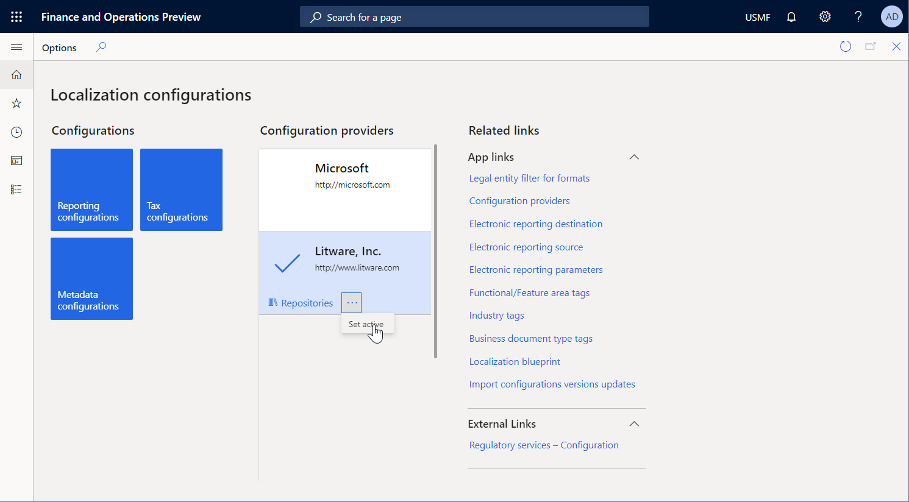
Import the provided ER solution
Go to Organization administration > Workspaces > Electronic reporting.
On the Localization configurations page, in the Configurations section, select the Reporting configurations tile.
On the Configurations page, if the Model for cheques configuration isn't available in the configuration tree, follow these steps to import the ER data model configuration:
- On the Action Pane, select Exchange > Load from XML file.
- In the dialog box, select Browse, find and select the Model for cheques.xml file, and then select OK.
If the Cheques printing format configuration isn't available in the configuration tree, follow these steps to import the ER format configuration:
- On the Action Pane, select Exchange > Load from XML file.
- In the dialog box, select Browse, find and select the Cheques printing format.xml file, and then select OK.
In the configuration tree, expand Model for cheques.
Review the list of imported ER configurations in the configuration tree.
Generate a payment check
Go to Cash and bank management > Bank accounts > Bank accounts.
On the Bank accounts page, select the USMF OPER account.
On the bank account details page, on the Action Pane, on the Set up tab, in the Layout group, select Check.
On the Check layout page, select Edit.
On the General FastTab, set the Generic electronic Export format option to Yes.
In the Export format configuration field, select the Cheques printing format ER format that you imported earlier.
On the Action Pane, select Print test.
In the dialog box, set the Negotiable check format option to Yes, and then select OK.
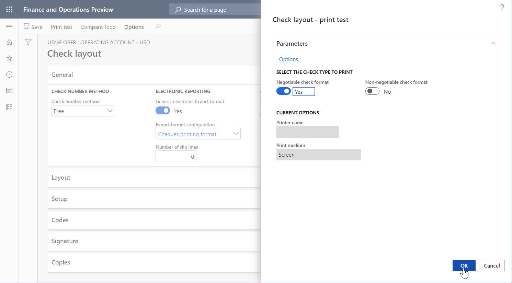
Review the generated payment check
- Open the generated check in Excel.
Review the generated check.
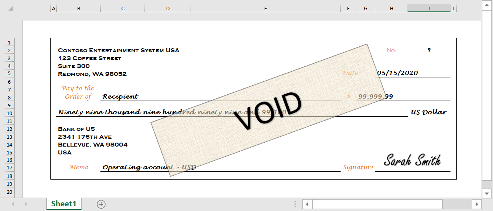
Modify the format of the provided ER solution
Apply a new check template
You can use the Excel desktop application to open the Cheque template Excel.xlsx file that you imported earlier. Notice that this template differs from the template that you used to generate a payment check in the provided ER solution. In addition, it includes an AmountBarcode element for the bar code image.
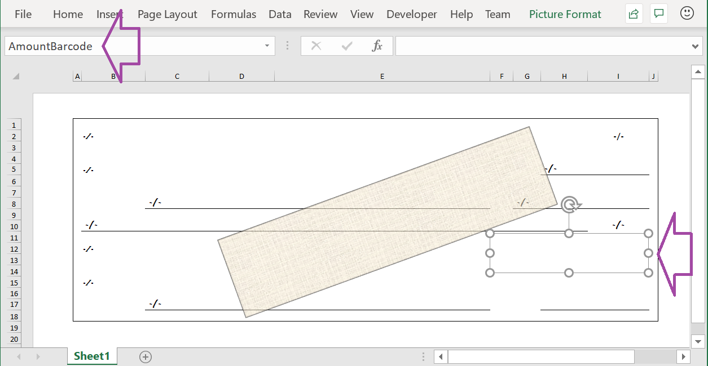
You must now modify the ER solution and then reapply the modified template.
Go to Organization administration > Workspaces > Electronic reporting.
On the Localization configurations page, in the Configurations section, select Reporting configurations.
On the Configurations page, in the configuration tree, expand Model for cheques, and select Cheques printing format.
On the Action Pane, select Designer.
In the ER Operations designer, select the Mapping tab on the right side of the page, and then, in the format tree pane on the left, select Expand/collapse.
Notice that all cell format elements are bound to the appropriate data sources.
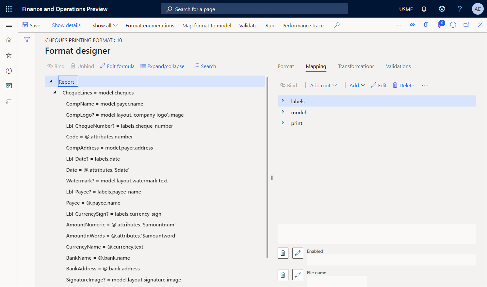
Select the Format tab on the right side of the page.
On the Action Pane, select the ellipsis (...), and then select Import.
In the Import group, select Update from Excel, and then select Update template.
In the dialog box, browse to the Cheque template Excel.xlsx file that is saved on your computer, select it, and then select OK to confirm that the selected template should be applied.
Select the Mapping tab on the right side of the page, and then, in the format tree pane on the left, select Expand/collapse.
Notice that the AmountBarcode cell element has been added to the format. This element is associated with the AmountBarcode element that has been added to the modified Excel template as a placeholder for a bar code image.
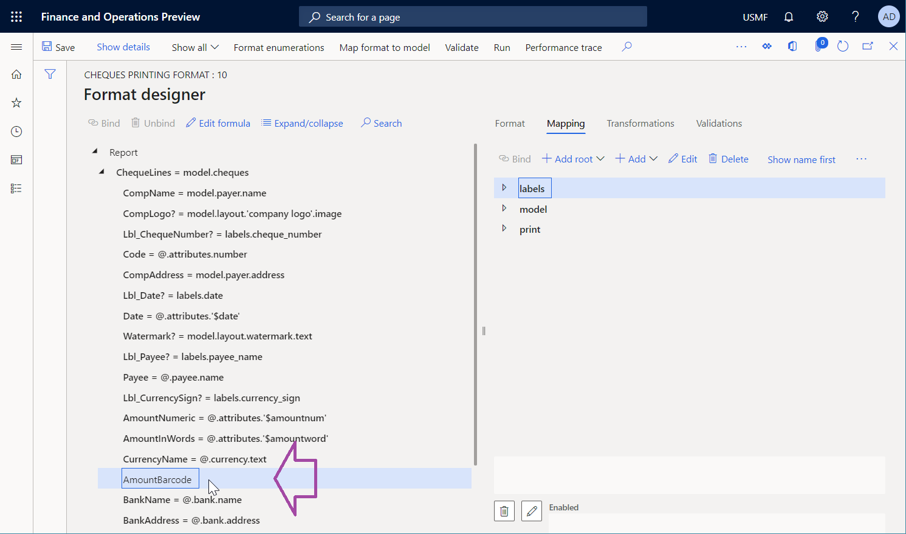
Add a new Barcode data source
Next, you must add a new data source of the Barcode type.
In the ER Operations designer, on the Mapping tab on the right side of the page, select the print data source.
Select Add, and then, in the Functions group, select the Barcode data source type.
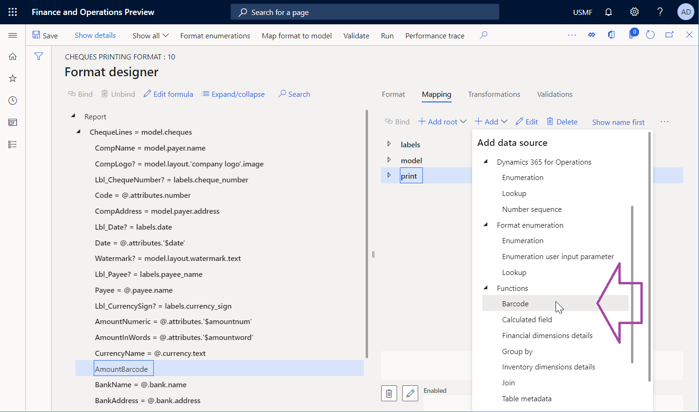
In the dialog box, in the Name field, enter barcode.
In the Barcode format, select Code 128.
In the Width field, enter 500.
Select OK.
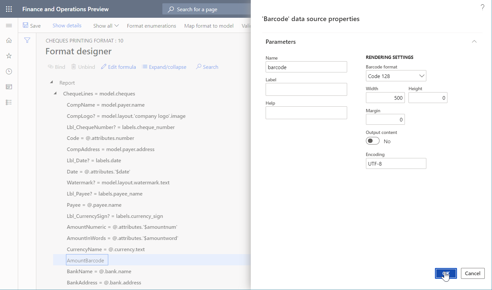
Bind a new format element
Next, you must bind the new format element to the data source that you just added.
In the ER Operations designer, on the Mapping tab on the right side of the page, select the print\barcode data source.
In the format tree pane on the left, select the AmountBarcode cell element, and then select Bind.
On the Action Pane, select Show details.
Notice that, because the Barcode data source is represented in the binding as a function that contains a single parameter, the name of the bound format element has been automatically taken as the argument of that parameter.
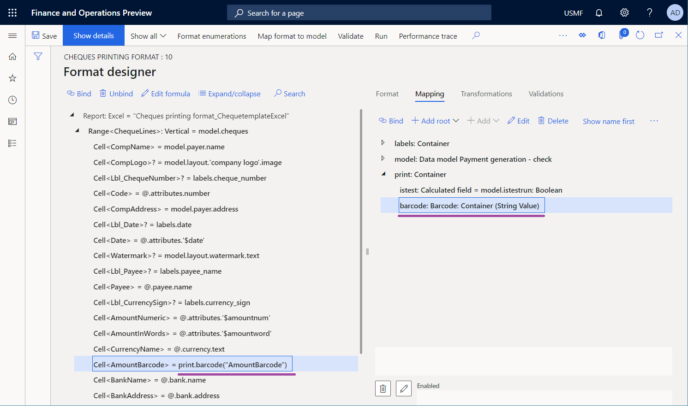
Select Edit formula to adjust the binding.
You don't want the name of the cell element to be returned. Therefore, you must configure an expression that returns text that contains the payable amount of the current check. Because the parent ChequeLines range is bound to the model.cheques data source, the payable amount of the current check is available in the model.cheques.attributes.amount field of the Real data type.
In the Formula field, enter print.barcode(NUMBERFORMAT(@.attributes.amount, "F2")).
Select Save, and then close the ER Formula designer.
Notice that the binding has been adjusted.
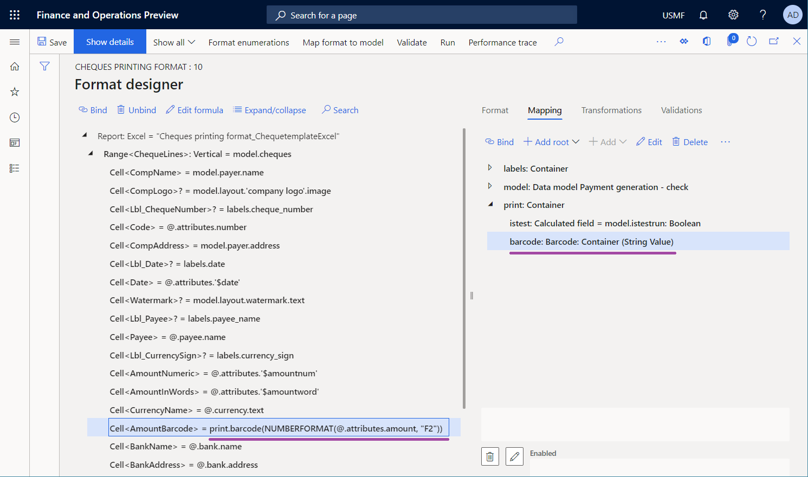
Select Save, and then close the ER Operations designer.
Make the modified version available for test runs
By default, the only versions that have a status of Completed and Shared are used when you run an ER format.
If you've finalized your changes, you can complete your work with the current draft version and make your changes available for use. For instructions, see the Complete the modified format version section that follows.
If you want to continue to work with the current draft version, but you have to use it to generate checks, you must explicitly specify that you want to use the draft version of the format for execution. For instructions, see the Make the draft version available for use section.
Complete the modified format version
- Go to Organization administration > Workspaces > Electronic reporting.
- On the Localization configurations page, in the Configurations section, select Reporting configurations.
- On the Configurations page, in the configuration tree, expand Model for cheques, and select Cheques printing format.
- On the Versions FastTab, select the record that has a status of Draft.
- Select Change status, and then select Complete.
- In the dialog box, select OK.
The status of the current version is changed from Draft to Completed, and a new version that has a status of Draft is created. You can use this new draft version to apply additional changes.
Make the draft version available for use
- Go to Organization administration > Workspaces > Electronic reporting.
- On the Localization configurations page, in the Configurations section, select Reporting configurations.
- On the Configurations page, on the Action Pane, in the Configurations tab, in the Advance settings group, select User parameters.
- In the dialog box, set the Run setting options to Yes, and then select OK.
- In the configuration tree, expand Model for cheques, and select Cheques printing format.
- Set the Run draft option to Yes.
- Select Save.
The draft version of the selected format is marked as available for use when the selected format is run.
Generate a payment check
Go to Cash and bank management > Bank accounts > Bank accounts.
On the Bank accounts page, select the USMF OPER account.
On the bank account details page, on the Action Pane, on the Set up tab, in the Layout group, select Check.
On the Check layout page, on the Action Pane, select Print test.
In the dialog box, set the Negotiable check format option to Yes.
Select OK.
Review the generated check. Notice that a bar code has been generated to encode the payable amount of the check.
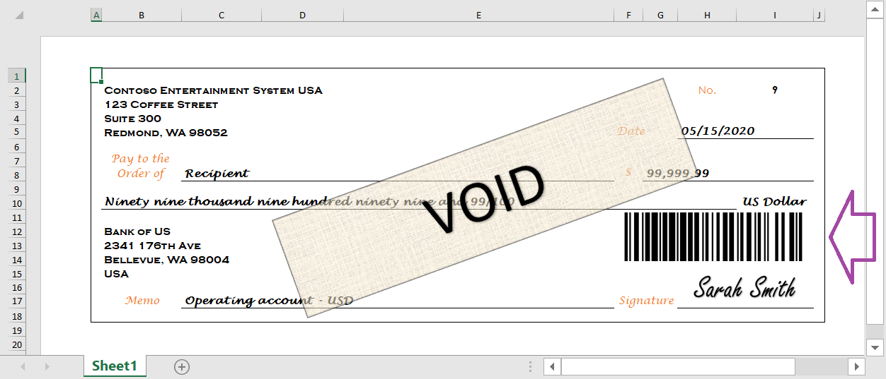
Important
An exception is thrown if the argument of a Barcode data source doesn't comply with the appropriate requirements that are specific to the bar code format. For example, when the Barcode data source is called to generate an EAN-8 bar code for the provided text, an exception is thrown if the length of the text exceeds seven characters.
Convert the generated check to a PDF
As described in the Generate printable FTI forms topic, you can use a special font to produce bar codes in a generated document. In this case, additional transformations of the generated document might depend on the availability of that font in the transformation environment. For example, if you try to convert a document to PDF format or preview it in an environment where the font is missing, bar codes won't be rendered correctly.
However, when you use the Barcode data source to produce bar codes, the rendering of those bar codes doesn't depend on any font. Therefore, you can easily convert documents that contain the bar codes to PDF format. The following illustration shows the preview of a generated payment check that has been converted to a PDF, based on the setting of the configured ER destination.
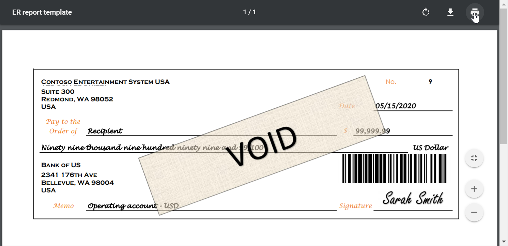
Limitations
Note
Some types of bar codes that are generated have a fixed aspect ratio. This behavior makes sense if you've turned on the Enable usage of EPPlus library in Electronic reporting framework feature to work with Excel documents in ER. In that case, an image is entered into a placeholder that has a locked aspect ratio. Therefore, when the dimensions of a placeholder in a template correspond to the ratio of an image that is entered, a real picture in a generated document might be resized to maintain the required aspect ratio. To prevent picture resizing, use a placeholder that has an expected aspect ratio.